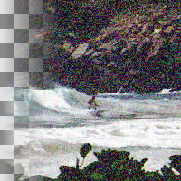

Add RGB Noise
Distort colors by random amounts
Correlated noise
name: correlated
type: boolean
default: False
Independent RGB
Control amount of noise for each RGB channel separately
name: independent
type: boolean
default: True
Linear RGB
Operate on linearized RGB color data
name: linear
type: boolean
default: True
Gaussian distribution
Use a gaussian noise distribution, when unticked a linear noise distribution is used instead
name: gaussian
type: boolean
default: True
Red
name: red
type: double
default: 0.20
minimum: 0.00
maximum: 1.00
ui-minimum: 0.00
ui-maximum: 1.00
ui-gamma: 1.00
ui-step-small: 0.00
ui-step-big: 0.10
ui-digits: 3
Green
name: green
type: double
default: 0.20
minimum: 0.00
maximum: 1.00
ui-minimum: 0.00
ui-maximum: 1.00
ui-gamma: 1.00
ui-step-small: 0.00
ui-step-big: 0.10
ui-digits: 3
Blue
name: blue
type: double
default: 0.20
minimum: 0.00
maximum: 1.00
ui-minimum: 0.00
ui-maximum: 1.00
ui-gamma: 1.00
ui-step-small: 0.00
ui-step-big: 0.10
ui-digits: 3
Alpha
name: alpha
type: double
default: 0.00
minimum: 0.00
maximum: 1.00
ui-minimum: 0.00
ui-maximum: 1.00
ui-gamma: 1.00
ui-step-small: 0.00
ui-step-big: 0.10
ui-digits: 3
Random seed
name: seed
type: seed
default: 0
minimum: 0
maximum: +inf
pads: input output
parent-class: GeglOperationPointFilter
categories: noise
source: operations/common/noise-rgb.c
 This page is part of the online GEGL Documentation, GEGL is a data flow based image processing library/framework, made to fuel GIMPs high-bit depth non-destructive editing future.
This page is part of the online GEGL Documentation, GEGL is a data flow based image processing library/framework, made to fuel GIMPs high-bit depth non-destructive editing future.